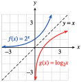
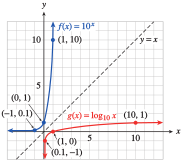
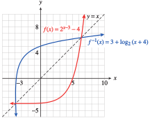
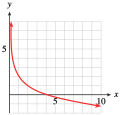
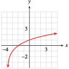
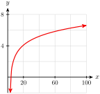
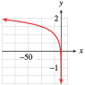
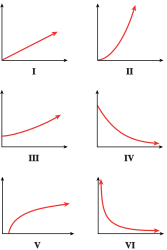
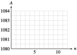

Before we look at logarithmic functions, lets quickly review exponents and logs. For a particular base, lets say 5, taking a logarithm is the opposite operation for raising to a power. For example, if we raise base 5 to a power of \(\alert{2}\text{,}\) we get
We can say that a logarithm is actually an exponent. Asking for the log base 5 of 25 is asking "what power of 5, or what exponent on base 5 will give me 25?"
Example5.31.
Write each logarithmic equation as an equivalent exponential equation.
\(\displaystyle \log_3 {(81)} = 4\)
\(\displaystyle \log_b {(32)} = 5\)
Solution.
The logarithm asks "To what power must I raise 3 to get 81?" The base is 3 and the logarithm (or exponent) is 4, so \(3^4 = 81\text{.}\)
The logarithm asks "To what power must I raise \(b\) to get 32?" The base is \(b\) and the logarithm (or exponent) is 5, so \(b^5 = 32\text{.}\)
For a more thorough review of logarithms you can refer to Section 4.3.1.
Checkpoint5.32.QuickCheck 1.
Which of these could you use to estimate the value of \(\log_5 {378}\) ?
Find multiples of 5.
Find the fifth root of 378.
Find powers of 5.
Divide 378 by 5.
Answer.
\(\text{Find powers of 5.}\)
Solution.
Find powers of 5.
Now well consider functions defined in terms of logarithms, or logarithmic functions. For example,
is a logarithmic function. In order to understand logarithmic functions better, we first investigate how they are related to more familiar functions, the exponential functions.
SubsectionInverse of the Exponential Function
Inverse functions are really a generalization of inverse operations. For example, raising to the \(n\)th power and taking \(n\)th roots are inverse operations. In fact, we use the following rule to define cube roots:
\begin{equation*}
\sqrt[3]{b} = a ~~~~\text{ if and only if }~~~~ a^3 = b
\end{equation*}
Compare this rule to the definition of inverse functions from Section5.1.
Inverse Functions.
Suppose \(g\) is the inverse function for \(f\text{.}\) Then
\begin{equation*}
g(b) = a~~~~~ \text{ if and only if }~~~~~f(a) = b
\end{equation*}
In this case, \(g(x) = \sqrt[3]{x}\) and \(f(x) = x^3\text{,}\) and the equations above tell us that the two functions \(f(x) = x^3\) and \(g(x) = \sqrt[3]{x}\) are inverse functions.
In Chapter4, we saw that a similar rule relates the operations of raising a base \(b\) to a power and taking a base \(b\) logarithm, because they are inverse operations.
Conversion Formulas for Logarithms.
For any base \(b \gt 0, b\ne 1\text{,}\)
\begin{equation*}
\blert{\log_{b}{x} = y} ~~~~\text{ if and only if }~~~~ \blert{b^y = x}
\end{equation*}
We can now define the logarithmic function, \(g(x) = \log_{b}{x}\text{,}\) that takes the log base \(b\) of its input values. The conversion formulas tell us that the log function, \(g(x) = \log_{b}{x}\text{,}\) is the inverse of the exponential function, \(f(x) = b^x\text{.}\)
is the inverse of the exponential function of the same base, \(f(x) = b^x\text{.}\)
SubsectionGraphs of Logarithmic Functions
What does the graph of a log function look like? We can use exponential functions to help us.
We can obtain a table of values for \(g(x) = \log_2 x\) by making a table for \(f(x) = 2^x\) and then interchanging the columns, as shown in the tables below. You can see that the graphs of \(f(x) = 2^x\) and \(g(x) = \log_2 x\text{,}\) shown in the figre, are symmetric about the line \(y = x\text{.}\)
\(x\)
\(f(x)=2^x\)
\(-2\)
\(\dfrac{1}{4}\)
\(-1\)
\(\dfrac{1}{2}\)
\(0\)
\(1\)
\(1\)
\(2\)
\(2\)
\(4\)
\(x\)
\(g(x)=\log_{2}{x}\)
\(\dfrac{1}{4}\)
\(-2\)
\(\dfrac{1}{2}\)
\(-1\)
\(1\)
\(0\)
\(2\)
\(1\)
\(4\)
\(2\)

The same procedure works for graphing log functions with any base: If we want to find values for the function \(y=\log_b x\text{,}\) we can find the values for the exponential function \(y=b^x\text{,}\) and then interchange the \(x\) and \(y\) values in each ordered pair.
Example5.33.
Graph the function \(f(x)=10^x\) and its inverse \(g(x)=\log_{10}{x}\) on the same axes.
Solution.
We start by making a table of values for the function \(f(x)=10^x\text{.}\) We can make a table of values for the inverse function, \(g(x) = \log_{10}{x}\text{,}\) by interchanging the components of each ordered pair in the table for \(f\text{.}\)
\(x\)
\(f(x)\)
\(-2\)
\(0.01\)
\(-1\)
\(0.1\)
\(0\)
\(1\)
\(1\)
\(10\)
\(2\)
\(100\)
\(x\)
\(g(x)\)
\(0.01\)
\(-2\)
\(0.1\)
\(-1\)
\(1\)
\(0\)
\(10\)
\(1\)
\(100\)
\(2\)

We plot each set of points and connect them with smooth curves to obtain the graphs shown above.
Checkpoint5.34.Practice 1.
Make a table of values and graph the function \(h(x) = \log_4 x\text{.}\)
\(x\)
\(\frac{1}{4}\)
\(1\)
\(2\)
\(4\)
\(16\)
\(\log_4 x\)
Answer1.
\(-1\)
Answer2.
\(0\)
Answer3.
\({\frac{1}{2}}\)
Answer4.
\(1\)
Answer5.
\(2\)
Solution.
\(x\)
\(\frac{1}{4}\)
\(1\)
\(2\)
\(4\)
\(16\)
\(\log_4 x\)
\(-1\)
\(0\)
\(1/2\)
\(1\)
\(2\)
A graph is below.
Checkpoint5.35.QuickCheck 2.
What is the \(y\)-intercept of the graph of \(y=\log_5 x\) ?
\(\displaystyle (0,1)\)
\(\displaystyle (1,0)\)
\(\displaystyle (0,5)\)
There is none.
Answer.
\(\text{Choice 4}\)
Solution.
There is none: the graph of \(y=\log_5 x\) has no \(y\)-intercept.
Caution5.36.
Did you notice that the graphs of the log functions do not have any points with negative \(x\)-coordinates? This is because an exponential function has no negative (or zero) output values, so a log function has no negative or zero input values.
For example, suppose that \(~\log_5{(-25)} = x~\text{.}\) Then \(~5^x = -25~\text{.}\) But this is impossible, because \(5^x\) cannot be negative. Thus, the log of a negative number (or zero) is undefined. In other words,
\begin{equation*}
\text{We cannot take the log of a negative number or zero.}
\end{equation*}
You can also see that while an exponential growth function increases very rapidly for positive input values, its inverse, the logarithmic function, grows extremely slowly.
In addition, the logarithmic function \(y = \log_b x\) has the following properties.
Logarithmic Functions \(y = \log_b x\).
Domain: all positive real numbers
Range: all real numbers
\(x\)-intercept: \((1, 0)\)
\(y\)-intercept: none
Vertical asymptote at \(x = 0\)
The graphs of \(y = \log_b x\) and \(y = b^x\) are symmetric about the line \(y = x\text{.}\)
Checkpoint5.37.QuickCheck 3.
The domain of the function \(g(x)=\log_3 x\) is
all real numbers.
all multiples of 3.
all non-negative numbers.
all positive numbers.
Answer.
\(\text{all positive numbers.}\)
Solution.
The domain of the function \(g(x)=\log_3 x\) is all positive numbers.
Checkpoint5.38.Pause and Reflect.
Why does the function \(f(x)=\log x\) grow so slowly?
SubsectionModeling with Logarithmic Functions
We can use the LOG key on a calculator to evaluate the function \(f(x) = \log_{10}{x}\text{.}\)
Example5.39.
Let \(f(x) = \log_{10}{x}\text{.}\) Evaluate the following expressions.
The formula \(T = \dfrac{\log 2 \cdot t_i}{3 \log(D_f /D_0)}\) is used by X-ray technicians to calculate the doubling time of a malignant tumor. \(D_0\) is the diameter of the tumor when first detected, \(D_f\) is its diameter at the next reading, and \(t_i\) is the time interval between readings, in days. Calculate the doubling time of the following tumor: its diameter when first detected was 1 cm, and 7 days later its diameter was 1.05 cm.
days
Answer.
\(33.149\)
Solution.
33 days
Logarithmic functions are useful for modeling increasing functions that slow down as the input increases.
Example5.42.
Life expectancy at birth is the average number of years a newborn child is expected to live. In 1900, the average life expectancy at birth in the U.S. was 47.3 years, and in 1910 it had risen to 50.0 years. During rest of the twentieth century, life expectancy was modeled by the formula
Graph the life expectancy function for the years 1910 to 2000.
The life expectancy in 1950 was 68.2 years. What does the function \(L(x)\) predict for life expectancy in 1950?
According to the model, how much did life expectancy increase between 1920 and 1930? How much did it increase between 1990 and 2000?
Solution.
We can make a table of values for \(L(x)\) and plot points to obtain the graph below, which also shows the actual data points for life expectancy for the decades from 1910 to 2000.
The function predicts a life expectancy of 67.4 years in 1950.
Between 1920 and 1930, life expectancy increased from 56.1 to 61.1, or 5 years. Between 1990 and 2000 it increased from 74.6 to 75.9, or 1.3 years.
In the previous Example, we see that although life expectancy has been increasing over time, it has been slowing down or leveling off. In fact, life expectancy in the US actually declined slightly from 78.94 in 2013 to 78.81 in 2018. (What factors may have contributed to this decline?) By 2024 it had rebounded to 79.25. It remains to be seen how well the model predicts life expectancy in the 21st century.
Checkpoint5.43.Practice 3.
The CDC (Centers for Disease Control and Prevention) provides Growth Charts for the average height and weight of children from age 2 to 20. The average height of girl children is given in centimeters by
Now we can solve for \(x\) to find \(2x = 900\text{,}\) or \(x = 450\text{.}\)
Checkpoint5.45.Practice 4.
Solve for the unknown value in each equation.
\(\log_b 2 = \dfrac{1}{2}\)
\(b=\)
\(\log_{3}{(2x - 1)} = 4\)
\(x=\)
Answer1.
\(4\)
Answer2.
\(41\)
Solution.
\(\displaystyle b=4\)
\(\displaystyle x=41\)
Example5.46.
If \(f(x) = \log_{10}{x}\text{,}\) find \(x\) so that \(f(x)=-3.2\text{.}\)
Solution.
We must solve the equation \(\log_{10}{x} = -3.2\text{.}\) Rewriting the equation in exponential form yields
\begin{equation*}
x = 10^{-3.2}\approx 0.00063
\end{equation*}
Note5.47.Evaluating \(10^x\).
In Example5.46, the expression \(10^{-3.2}\) can be evaluated in two different ways with a calculator. We can use the ^ key and press
\(10\)^(-)\(3.2\)ENTER
which gives 6.30957344 E -4, or approximately \(0.00063\text{.}\) Alternatively, because \(10^x\) is the inverse function for \(\log x\text{,}\) we can press
2ndLOG(-)\(3.2\)ENTER
which gives the same answer as before.
Checkpoint5.48.Practice 5.
Imagine the graph of \(f(x) = \log_{10}{x}\text{.}\) How far must you travel along the \(x\)-axis until the \(y\)-coordinate reaches a height of 5.25?
Answer: Until \(x=\)
Answer.
\(10^{5.25}\)
Solution.
\(x = 177,827.941\)
If an equation contains more than one log, we must first combine any expressions involving logs into a single logarithm.
But \(x = -3\) is not a solution of the original equation, because neither \(\log_{10}{(x + 1)}\) nor \(\log_{10}{(x - 2)}\) is defined for \(x = -3\text{.}\) (Remember that we cannot take a logarithm of a negative number or zero.) We say that the apparent solution \(x=-3\) is extraneous, and the only solution of the original equation is \(4\text{.}\)
Extraneous solutions can arise whenever we solve a logarithmic equation, especially if there is more than one apparent solution. Therefore, we should always check that a possible solution does not cause one of the logarithms to be undefined. Here are guidelines for solving a logarithmic equation.
Steps for Solving Logarithmic Equations.
Use the properties of logarithms to combine all logs into one log.
Isolate the log on one side of the equation.
Convert the equation to exponential form.
Solve for the variable.
Check for extraneous solutions.
Checkpoint5.50.QuickCheck 5.
Which of these is the first step in solving the equation \(\log x + \log (x-1)=2\) ?
\(\displaystyle \log (2x-1)=2\)
\(\displaystyle \log x = 2 - \log (x-1)\)
\(\displaystyle \log x(x-1)=2\)
\(\displaystyle x+x-1=2^x\)
Answer.
\(\text{Choice 3}\)
Solution.
\(\log x(x-1)=2\)
Checkpoint5.51.Practice 6.
Solve \(\log_2 x + \log_{2}{(x - 2)} = 3\text{.}\)
\(x=\) [Separate multiple solutions with commas when appropriate.]
Hint.
Rewrite the left side as a single logarithm.
Rewrite the equation in exponential form.
Solve for \(x\text{.}\)
Check for extraneous solutions.
Answer.
\(4\)
Solution.
\(x=4\)
Checkpoint5.52.QuickCheck 6.
We cannot take a logarithm of
a negative number or zero
a fraction
a variable expression
.
After solving a logarithmic equation, we must check for
extraneous solutions
irrational numbers
.
If an equation contains more than one log, we must first combine them into
a common denominator
a single logarithm
.
If there is only one log involved, we write the equation in
standard
general
exponential
point-slope
form.
Answer1.
\(\text{a negative number or zero}\)
Answer2.
\(\text{extraneous solutions}\)
Answer3.
\(\text{a single logarithm}\)
Answer4.
\(\text{exponential}\)
Solution.
a negative number or zero
extraneous solutions
a single logarithm
exponential form
Checkpoint5.53.Pause and Reflect.
What is an extraneous solution?
SubsectionMore About Inverse Functions
Lets take a closer look at the relationship between functions and their inverse functions. In Section 5.1 we saw that an inverse function "undoes" the effects of the function, and vice versa. In other words, if we apply a function and then its inverse to an input, we return to that input. For example, consider the function \(f(x)=x^3\) and its inverse function \(g(x)=\sqrt[3]{x}\text{.}\) Well start with an input of \(x=5\text{,}\) first apply the function \(f\text{,}\) and then apply the function \(g\) to the output. In function notation, that operation looks like this.
We start by applying the innermost function, namely \(f\text{,}\) to get \(5^3 = 125\text{,}\) and then apply \(g\text{,}\) to get \(\sqrt[3]{125} = 5\text{.}\) We have returned to out original input.
These examples illustrate a general rule about inverse functions.
Functions and Inverse Functions.
Suppose \(g\) is the inverse function for \(f\text{.}\) Then
\begin{equation*}
g\left(f(x)\right) = x~~~\text{ and }~~~f\left(g(y)\right) = y
\end{equation*}
as long as \(x\) is in the domain of \(f\text{,}\) and \(y\) is in the domain of \(g\text{.}\)
Because a logarithmic function is the inverse of the exponential function with the same base, each undoes the effect of the other. For example, the function \(g(x) = \log_2 x\) is the inverse of \(f(x) = 2^x\text{.}\) So, if we start with \(x = 3\text{,}\) apply \(f\text{,}\) and then apply \(g\) to the result, we return to the original number, 3.
We evaluate the expression starting with the inside function, \(f(3) = 2^3 = 8\text{,}\) and then compute the log base 2 of the result. Applying the exponential function and then the log function with the same base returne us to the original input.
Because the log and the exponential are inverse functions, similar calculations hold for any value of \(x\) and any base \(b \gt 0\text{,}\) so that \(\log_b\left(b^x\right) = x\text{.}\)
Example5.54.
Simplify each expression.
\(\displaystyle \log_{4}{4^6}\)
\(\displaystyle \log_{8}\left({8^{2a+3}}\right)\)
Solution.
In this expression, we start with \(6\text{,}\) apply the exponential function with base \(4\text{,}\) and then take a logarithm base \(4\text{.}\) Because the logarithm is the inverse of the exponential function, we return to the original number, \(6\text{.}\)
The input of the exponential function is the expression \(2a + 3\text{.}\) Because the bases of the log and the exponential function are both \(8\text{,}\) they are inverse functions, and applying them in succession returns us to the original input. Thus, \(\log_{8}\left({8^{2a+3}}\right) = 2a + 3\text{.}\)
Checkpoint5.55.Practice 8.
Simplify each expression.
\(\log_{10}{10^6}=\)
\(\log_{w}{w^{x+1}}=\) , for \(w \gt 0, ~ w\ne 1\)
Answer1.
\(6\)
Answer2.
\(x+1\)
Solution.
\(\displaystyle 6\)
\(\displaystyle w+1\)
We can also apply the two functions in the opposite order. For example,
To see that this equation is true, we simplify the exponent first. We start with \(8\text{,}\) and apply the log base \(2\) function. Because \(\log_2 8 = 3\text{,}\) we have
(Remember the order of operations: do whats inside of parentheses first, to get \(g(8) = \log_2{(8)}\text{.}\)) In other words, applying first the log function and then the exponential function returns the original input value.
Of course, a similar equation holds for any positive value of \(x\) and any base \(b \gt 0, b\ne 1\text{:}\)
We first found the exponent on 10 that gives 1000, then we raised 10 to that exponent (namely 3), so we get 1000.
The expression \(\log_{Q}{25}\) asks for the exponent on \(Q\) that gives \(25\text{.}\) Lets call that exponent \(k\text{,}\) so that \(\log_{Q}{25} = k\text{.}\) Then \(Q^{\log_{Q}{25}} = Q^k\text{,}\) which gives us \(25\text{.}\)
Checkpoint5.57.Practice 9.
Simplify each expression.
\(4^{\log_4 {64}}=\)
\(2^{\log_{2}{(x^2+1)}}=\)
Answer1.
\(64\)
Answer2.
\(x^{2}+1\)
Solution.
\(\displaystyle 64\)
\(\displaystyle x^2+1\)
We summarize these relationships as follows.
Exponential and Logarithmic Functions.
Because \(f(x) = b^x\) and \(g(x) = \log_{b}{x}\) are inverse functions for \(b \gt 0, b\ne 1\text{,}\)
\begin{equation*}
\blert{\log_{b}{b^x} = x}\text{, for all }x ~~~~~\text{ and }~~~~~\blert{b^{\log_b x} = x}\text{, for }x \gt 0
\end{equation*}
In Chapter 4 we solved exponential equations by using the conversion equations to rewrite them in logarithmic form. The fact that \(~\log_{b}{b^x} = x~\) gives us another way to think of the solution; we can take the log of both sides of the equation. Well use this method in the next Example. Recall from Inverse Function Notation in Section 5.1 that the inverse function for a function \(f\) is often denoted by \(f^{-1}\text{.}\)
Example5.58.
Find the inverse of the function \(f(x) = 2^{x-3} - 4\text{.}\)
Graph \(f\) and \(f^{-1}\) on the same grid.
State the domain and range of \(f\) and of \(f^{-1}\text{.}\)
Solution.
We write the function as \(y = 2^{x-3} - 4\text{,}\) and solve for \(x\) in terms of \(y\text{.}\) First, we isolate the power:
\begin{equation*}
\begin{aligned}[t]
y + 4 \amp= 2^{x-3}\amp\amp \blert{\text{Take the log base 2 of each side.}}\\
\log_{2}{(y + 4)} \amp = \log_{2}{2}^{x-3} \amp\amp \blert{\text{Simplify the right side.}}\\\\
\log_{2}{(y + 4)}\amp = x-3\\
3 + \log_{2}{(y + 4)} \amp = x
\end{aligned}
\end{equation*}
The inverse function is \(f^{-1}(y) = 3 + \log_{2}{(y + 4)}\text{.}\) However, to graph both \(f\) and \(f^{-1}\) on the same grid, we write the inverse function as \(f^{-1}(x) = 3 + \log_{2}{(x + 4)}\text{.}\)
To graph \(f\text{,}\) we translate the graph of \(y = 2^x\) by \(3\) units to the right and \(4\) units down. The graph of \(f^{-1}\) looks like the graph of \(y = \log_2 x\text{,}\) but shifted \(4\) units to the left and \(3\) units up. The graphs are shown below, along with the line \(y = x\text{.}\)

The function \(f\) is a translation of an exponential function, and its domain consists of all real numbers. Because the graph is shifted \(4\) units down, the range of \(f\) is \((-4,\infty)\text{.}\)
Because the log of a negative number or zero is undefined, for \(f^{-1}(x) = 3 + \log_{2}{(x + 4)}\text{,}\) we must have \(x + 4 \gt 0\text{,}\) so the domain of \(f^{-1}\) is \(x \gt -4\text{.}\) We can verify on the graph that the range of \(f^{-1}\) includes all real numbers. Thus,
State the domain and range of \(f\) and \(f^{-1}\text{.}\) Use inf for \(\infty\text{.}\)
Domain of \(f\text{:}\) ; Range of \(f\text{:}\)
Domain of \(f^{-1}\text{:}\) ; Range of \(f^{-1} \text{:}\)
Answer1.
\(10^{\frac{x}{2}}-1\)
Answer2.
\(\left(-1,\infty \right)\)
Answer3.
\(\left(-\infty ,\infty \right)\)
Answer4.
\(\left(-\infty ,\infty \right)\)
Answer5.
\(\left(-1,\infty \right)\)
Solution.
\(\displaystyle f^{-1}(x) = 10^{x/2} - 1\)
A graph is below.
Domain of \(f\text{:}\)\((-1,\infty)\text{;}\) Range of \(f\text{:}\) all real numbers; Domain of \(f^{-1}\text{:}\) all real numbers; Range of \(f^{-1}\text{:}\)\((-1, \infty)\)
Checkpoint5.60.Pause and Reflect.
Compare the graphs of \(f(x)=\log \dfrac{1}{x}\) and \(g(x)=-\log x\text{,}\) and explain.
SubsectionSection Summary
SubsubsectionVocabulary
Look up the definitions of new terms in the Glossary.
Logarithmic function
Logarithmic equation
Extraneous solution
SubsubsectionCONCEPTS
We define the logarithmic function, \(g(x) = \log_b x\text{,}\) which takes the log base \(b\) of its input values. The log function \(g(x) = \log_b x\) is the inverse of the exponential function \(f (x) = b^x\text{.}\)
Exponential and Logarithmic Functions.
Because \(f(x) = b^x\) and \(g(x) = \log_{b}{x}\) are inverse functions for \(b \gt 0, b\ne 1\text{,}\)
\begin{equation*}
\blert{\log_{b}{b^x} = x}\text{, for all }x ~~~~~\text{ and }~~~~~\blert{b^{\log_b x} = x}\text{, for }x \gt 0
\end{equation*}
Logarithmic Functions \(y = \log_b x\).
Domain: all positive real numbers
Range: all real numbers
\(x\)-intercept: \((1, 0)\)
\(y\)-intercept: none
Vertical asymptote at \(x = 0\)
The graphs of \(y = \log_b x\) and \(y = b^x\) are symmetric about the line \(y = x\text{.}\)
A logarithmic equation is one in which the variable appears inside of a logarithm. We can solve logarithmic equations by converting to exponential form.
Steps for Solving Logarithmic Equations.
Use the properties of logarithms to combine all logs into one log.
Isolate the log on one side of the equation.
Convert the equation to exponential form.
Solve for the variable.
Check for extraneous solutions.
SubsubsectionSTUDY QUESTIONS
Can the output of the function \(y = \log_b x\) be negative?
Francine says that \(\log_2 \dfrac{1}{x}= -\log_2 x\text{.}\) Is she correct? Why or why not?
Sketch a typical logarithmic function.
Simplify:
\(\displaystyle 10^{\log 13} \)
\(\displaystyle 7^{\log_7 13} \)
Why is the following attempt to solve the equation incorrect?
\begin{align*}
\blert{\text{Solve:}}\hphantom{blank}\log x + \log(x + 1) \amp= 2\\
x + x + 1 \amp= 10^2
\end{align*}
SubsubsectionSKILLS
Practice each skill in the Homework problems listed.
Evaluate log functions: #116, 27 and 28
Simplify expressions involving logs: #15 and 16, 19, and 20
Graph logarithmic functions and transformations of log functions: #14, 2528
Find formulas for inverse functions: #1724
Solve logarithmic equations: #2954
Solve formulas involving logs: #5560
ExercisesHomework 5.2
Exercise Group.
In Problems 14,
Make tables of values for each exponential function and its inverse logarithmic function.
Graph both functions on the same set of axes.
1.
\(f(x)=2^x \)
2.
\(f(x)=3^x \)
3.
\(f(x)=\left(\dfrac{1}{3} \right)^x \)
4.
\(f(x)=\left(\dfrac{1}{2} \right)^x \)
5.
How large must \(x\) be before the graph of \(y = \log_{10} x\) reaches a height of \(4\text{?}\)
How large must \(x\) be before the graph of \(y = \log_{10} x\) reaches a height of \(8\text{?}\)
6.
How large must \(x\) be before the graph of \(y = \log_{2} x\) reaches a height of \(5\text{?}\)
How large must \(x\) be before the graph of \(y = \log_{10} x\) reaches a height of \(10\text{?}\)
7.
For what values of \(x\) is \(y = \log_{10} x \lt -2\text{?}\)
8.
For what values of \(x\) is \(y = \log_{2} x \lt -3\text{?}\)
Exercise Group.
In Problems 914, \(f(x) = \log_{10} x\text{.}\) Evaluate.
9.
\(\displaystyle f(487)+f(206) \)
\(\displaystyle f(487+206) \)
10.
\(\displaystyle f(93)+f(1500) \)
\(\displaystyle f(93+1500) \)
11.
\(\displaystyle f(-7) \)
\(\displaystyle 6f(28) \)
12.
\(\displaystyle f(0) \)
\(\displaystyle 3f(41 ) \)
13.
\(\displaystyle 18-5f(3) \)
\(\displaystyle \dfrac{2}{5+f(0.6)} \)
14.
\(\displaystyle 15-4f(7) \)
\(\displaystyle \dfrac{3}{2+f(0.2)} \)
15.
Let \(f(x) = 3^x\) and \(g(x) = \log_3 x\text{.}\)
Compute \(f (4)\text{.}\)
Compute \(g[ f (4)]\text{.}\)
Explain why \(\log_3 3^x = x\) for any \(x\text{.}\)
Compute \(\log_3 3^{1.8}\text{.}\)
Simplify \(\log_3 3^a\text{.}\)
16.
Let \(f(x) = 2^x\) and \(g(x) = \log_2 x\text{.}\)
Compute \(f (32)\text{.}\)
Compute \(g[ f (32)]\text{.}\)
Explain why \(2^{\log_2 x} = x\) for any \(x\gt 0\text{.}\)
Compute \(2^{\log_2 6} \text{.}\)
Simplify \(2^{\log_2 Q}\text{.}\)
17.
If \(h(r ) = \log_2 r\text{,}\) find \(h^{-1}(8)\text{.}\)
If \(H(w) = 3^w\text{,}\) find \(H^{-1}\left(\dfrac{1}{9} \right) \text{.}\)
18.
If \(g(z ) = \log_3 z\text{,}\) find \(g^{-1}(-3)\text{.}\)
If \(G(q) = 2^q\text{,}\) find \(G^{-1}(1) \text{.}\)
Exercise Group.
For Problems 1920, simplify.
19.
\(\displaystyle 10^{\log 2k} \)
\(\displaystyle 10^{3\log x} \)
\(\displaystyle (\sqrt{10})^{\log x} \)
\(\displaystyle \log 100^m \)
20.
\(\displaystyle \log 10^{(1-x)} \)
\(\displaystyle 100^{\log 2x} \)
\(\displaystyle (0.1)^{\log (x-1)} \)
\(\displaystyle \log 10^{\log 10} \)
21.
What is the domain of the function \(f(x) = 4 + \log_3(x - 9)\text{?}\)
Find a formula for \(f^{-1}(x)\text{.}\)
22.
What is the domain of the function \(f(x) = 1- \log_2(16-4x)\text{?}\)
Find a formula for \(f^{-1}(x)\text{.}\)
23.
Find the inverse of the function \(f (x) = 100 - 4^{x+2}\text{.}\)
Show that \(f^{-1}\) undoes the effect of \(f\) on \(x = 1\text{.}\)
Show that \(f\) undoes the effect of \(f^{-1}\) on \(x = 84\text{.}\)
24.
Find the inverse of the function \(f (x) = 5 + 2^{-x}\text{.}\)
Show that \(f^{-1}\) undoes the effect of \(f\) on \(x = -2\text{.}\)
Show that \(f\) undoes the effect of \(f^{-1}\) on \(x = 6\text{.}\)
Exercise Group.
For Problems 2526, match each graph to its equation.
25.
\(\displaystyle y = \log_2(x - 3) \)
\(\displaystyle y = 3 + \log_2 x \)
\(\displaystyle y=2 - \log_2 x \)
\(\displaystyle y = \log_2(x + 4) - 1 \)



26.
\(\displaystyle y = 5\log x \)
\(\displaystyle y = \log \dfrac{x}{2} \)
\(\displaystyle y= \log \dfrac{1}{x} \)
\(\displaystyle y = \log(-x) \)

27.
In a psychology experiment, volunteers were asked to memorize a list of nonsense words, then 24 hours later were tested to see how many of the words they recalled. On average, the subjects had forgotten \(20\%\) of the words. The researchers found that the more lists their volunteers memorized, the larger the fraction of words they were unable to recall. (Source: Underwood, Scientific American, vol. 210, no. 3)
Number of lists, \(n\)
\(1\)
\(4\)
\(8\)
\(12\)
\(16\)
\(20\)
Percent forgotten, \(F\)
\(20\)
\(40\)
\(55\)
\(66\)
\(74\)
\(80\)
Plot the data. What sort of function seems to fit the data points?
Psychologists often describe rates of forgetting by logarithmic functions. Graph the function
\begin{equation*}
f (n) = 16.6 + 46.3 \log n
\end{equation*}
on the same graph with your data. Comment on the fit.
What happens to the function \(f (n)\) as \(n\) grows increasingly large? Does this behavior accurately reflect the situation being modeled?
28.
The water velocity at any point in a stream or river is related to the logarithm of the depth at that point. For the Hoback River near Bondurant, Wyoming,
\begin{equation*}
v = 2.63 + 1.03 \log d
\end{equation*}
where \(v\) is the velocity of the water, in feet per second, and \(d\) is the vertical distance from the stream bed, in feet, at that point. For Pole Creek near Pinedale, Wyoming,
\begin{equation*}
v = 1.96 + 0.65 \log d
\end{equation*}
Both streams are \(1.2\) feet deep at the locations mentioned. (Source: Leopold, Luna, Wolman, and Gordon, 1992)
Complete the table of values for each stream.
Distance from bed (feet)
\(0.2\)
\(0.4\)
\(0.6\)
\(0.8\)
\(1.0\)
\(1.2\)
Velocity, Hoback River, (ft/sec)
Velocity, Pole Creek (ft/sec)
If you double the distance from the bed, by how much does the velocity increase in each stream?
Plot both functions on the same graph.
The average velocity of the entire stream can be closely approximated as follows: Measure the velocity at \(20\%\) of the total depth of the stream from the surface and at \(80\%\) of the total depth, then average these two values. Find the average velocity for the Hoback River and for Pole Creek.
Exercise Group.
In Problems 2930, \(f (x) = \log_{10} x\text{.}\) Solve for \(x\text{.}\)
29.
\(\displaystyle f(x) = 1.41\)
\(\displaystyle f(x) = -1.69\)
\(\displaystyle f(x) = 0.52\)
30.
\(\displaystyle f(x) = 2.3\)
\(\displaystyle f(x) = -1.3\)
\(\displaystyle f(x) = 0.8\)
Exercise Group.
For Problems 3138, convert the logarithmic equation to exponential form.
31.
\(\log_{16}256 = w\)
32.
\(\log_{9}729 = y\)
33.
\(\log_{b}9 = -2\)
34.
\(\log_{b}8 = -3\)
35.
\(\log_{10}A = -2.3\)
36.
\(\log_{10}C = -4.5\)
37.
\(\log_{u}v = w\)
38.
\(\log_{m}n = p\)
Exercise Group.
For Problems 3946, solve for the unknown value.
39.
\(\log_{b} 8 = 3\)
40.
\(\log_{b} 625 = 4\)
41.
\(\log_{b} 10 = \dfrac{1}{2} \)
42.
\(\log_{b} 0.1 = -1\)
43.
\(\log_{2} (3x-1) = 5 \)
44.
\(\log_{5} (9-4x) = 3\)
45.
\(3(\log_{7} x) + 5=7 \)
46.
\(5(\log_{2} x)+6 = -14\)
Exercise Group.
For Problems 47-54, solve the logarithmic equation.
47.
\(\log_{10} x + \log_{10}(x + 21) = 2\)
48.
\(\log_{10} (x+3) + \log_{10}x = 1\)
49.
\(\log_{8} (x+5) - \log_{8}2 = 1\)
50.
\(\log_{10} (x-1) - \log_{10}4 = 2\)
51.
\(\log_{10} (x+2) + \log_{10}(x-1) = 1\)
52.
\(\log_{4} (x+8) - \log_{4}(x+2) = 2\)
53.
\(\log_{3} (x-2) - \log_{3}(x+1) = 3\)
54.
\(\log_{10} (x+3) - \log_{10}(x-1) = 1\)
Exercise Group.
For Problems 5560, solve for the indicated variable.
55.
\(t = T \log_{10}\left(1+\dfrac{A}{k} \right)\text{,}\) for \(A\)
56.
\(\log_{10} R= \log_{10} R_0 +kt \text{,}\) for \(R\)
57.
\(N=N_0 \log_b (ks) \text{,}\) for \(s\)
58.
\(T=\dfrac{H\log_{10}\dfrac{N}{N _0} }{\log_{10} \dfrac{1}{2}} \text{,}\) for \(N\)
59.
\(M=\sqrt{\dfrac{\log_{10}H}{k\log_{10} H_0}} \text{,}\) for \(H\)
60.
\(h=a-\sqrt{\dfrac{\log_{10}B}{t}} \text{,}\) for \(B\)
61.
Choose the graph for each function described below.
The area, \(A\text{,}\) of a pentagon is a quadratic function of the length, \(l\text{,}\) of its side.
The strength, \(F\text{,}\) of a hurricane varies inversely with its speed, \(s\text{.}\)
The price of food has increased by \(3\%\) every year for a decade.
The magnitude, \(M\text{,}\) of a star is a logarithmic function of its brightness, \(I\text{.}\)
The speed of the train increased at a constant rate.
If you do not practice a foreign language, you lose \(\frac{1}{8} \) of the words in your working vocabulary, \(V\text{,}\) each year.

62.
For each of the functions listed below, select the graph of its inverse function, if possible, from the figures labeled IVI. (The inverse of one of the functions is not shown.)
Do you notice a relationship between \(\log_{10} x\) and \(\log_{10} x^2\text{?}\) State the relationship as an equation.
70.
Complete the following table.
\(x\)
\(\dfrac{1}{x} \)
\(\log_{10}x\)
\(\log_{10}\dfrac{1}{x} \)
\(1\)
\(\hphantom{00000}\)
\(\hphantom{0000000}\)
\(\hphantom{0000000}\)
\(2\)
\(\hphantom{00000}\)
\(\hphantom{00000}\)
\(\hphantom{00000}\)
\(3\)
\(\hphantom{00000}\)
\(\hphantom{00000}\)
\(\hphantom{00000}\)
\(4\)
\(\hphantom{00000}\)
\(\hphantom{00000}\)
\(\hphantom{00000}\)
\(5\)
\(\hphantom{00000}\)
\(\hphantom{00000}\)
\(\hphantom{00000}\)
\(6\)
\(\hphantom{00000}\)
\(\hphantom{00000}\)
\(\hphantom{00000}\)
Do you notice a relationship between \(\log_{10} x\) and \(\log_{10} \dfrac{1}{x} \text{?}\) State the relationship as an equation.
Exercise Group.
In Problems 71 and 72, you found relationships between \(\log_{10} x\) and \(\log_{10} x^2\text{,}\) and between \(\log_{10} x\) and \(\log_{10} \dfrac{1}{x}\text{.}\) Assuming that those relationships hold for any base, complete the following tables and use them to graph the given functions.
where \(P\) is the principal invested, \(r\) is the interest rate, and \(t\) is the time period, in years.
Suppose you keep \(\$1000\) in an account that pays \(8\%\) interest. How much is the amount \(A\) after \(1\) year if the interest is compounded twice a year? Four times a year?
\begin{gather*}
n = \alert{2}: A = 1000\left(1 + \frac{0.08}{\alert{2}} \right)^{\alert{2}(1)}= \\
n = \alert{4}: A = 1000\left(1 + \frac{0.08}{\alert{4}} \right)^{\alert{4}(1)}=
\end{gather*}
What happens to \(A\) as we increase \(n\text{,}\) the number of compounding periods per year? Fill in the table showing the amount in the account for different values of \(n\text{.}\)
\(n\)
\(A\)
\(1\) (annually)
\(1080\)
\(2\) (semiannually)
\(\)
\(4\) (quarterly)
\(\)
\(6\) (bimonthly)
\(\)
\(12\) (monthly)
\(\)
\(365\) (daily)
\(\)
\(1000\)
\(\)
\(10,000\)
\(\)

Plot the values in the table from \(n = 1\) to \(n = 12\text{,}\) and connect them with a smooth curve. Describe the curve: What is happening to the value of \(A\text{?}\)
In part (2), as you increased the value of \(n\text{,}\) the other parameters in the formula stayed the same. In other words, \(A\) is a function of \(n\text{,}\) given by \(A = 1000 \left(1 + \dfrac{0.08}{n} \right)^n\text{.}\) Use your calculator to graph A on successively larger domains:
Use the Trace feature or the Table feature to evaluate \(A\) for very large values of \(n\text{.}\) Rounded to the nearest penny, what is the largest value of \(A\) that you can find?
As \(n\) increases, the values of \(A\) approach a limiting value. Although \(A\) continues to increase, it does so by smaller and smaller increments and will never exceed \(\$1083.29\text{.}\) When the number of compounding periods increases without bound, we call the limiting result continuous compounding.
Is there an easier way to compute \(A\) under continues compounding? Yes! Compute \(1000e^{0.08}\) on your calculator. (Press 2ndLN to enter \(e^x\text{.}\)) Compare the value to your answer in part (5) for the limiting value. The number \(e\) is called the natural base. Well compute its value shortly.
Repeat your calculations for two other interest rates, \(15\%\) and (an extremely unrealistic) \(100\%\text{,}\) again for an investment of \(\$1000\) for \(1\) year. In each case, compare the limiting value of \(A\text{,}\) and compare to the value of \(1000e^r\text{.}\)
\(r=0.15\)
\(n\)
\(A\)
\(1\)
\(115\)
\(2\)
\(\hphantom{00000}\)
\(4\)
\(\)
\(6\)
\(\)
\(12\)
\(\)
\(3652\)
\(\)
\(1000\)
\(\)
\(10,000\)
\(\)
\(~~1000~e^{0.15}= \)
\(r=1\)
\(n\)
\(A\)
\(1\)
\(200\)
\(2\)
\(\hphantom{00000}\)
\(4\)
\(\)
\(6\)
\(\)
\(12\)
\(\)
\(3652\)
\(\)
\(1000\)
\(\)
\(10,000\)
\(\)
\(~~1000~e^{1}= \)
In part (8b), you have computed an approximation for \(1000e\text{.}\) What is the value of \(e\text{,}\) rounded to \(5\) decimal places?
Complete the table of values. What does \(\left(1 + \dfrac{1}{n} \right)^n\) appear to approach as \(n\) increases?